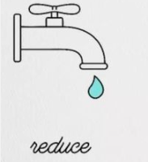
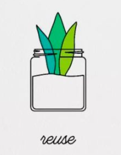
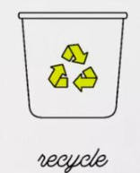

Reduksi
Reduksi adalah langkah pertama dalam upaya melindungi lingkungan. Ini termasuk pengurangan penggunaan bahan-bahan berbahaya, penghematan energi, dan pengurangan limbah.

Reuse
Memanfaatkan kembali barang-barang yang masih dapat digunakan adalah cara efektif untuk mengurangi jumlah sampah yang masuk ke lingkungan. Dengan mendaur ulang, kita dapat memperpanjang umur barang dan mengurangi penggunaan sumber daya baru.

Recycle
Daur ulang adalah proses mengubah bahan bekas menjadi bahan baru yang dapat digunakan kembali. Ini membantu mengurangi limbah yang masuk ke tempat pembuangan sampah dan mengurangi dampak negatif terhadap lingkungan.